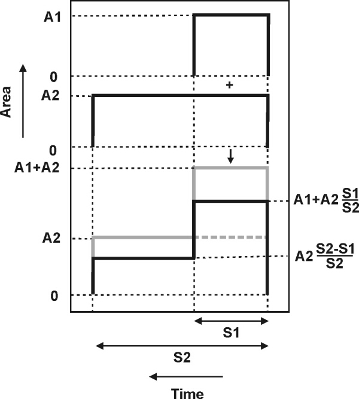
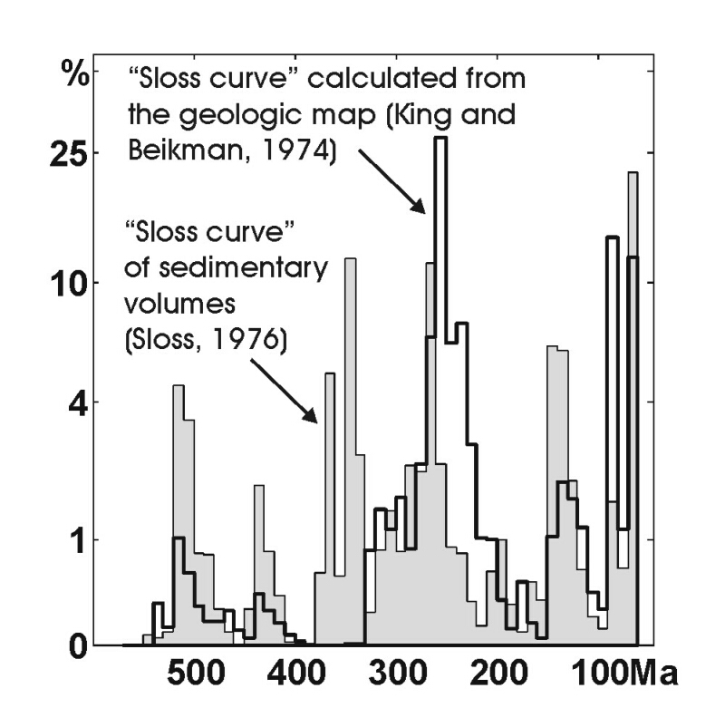
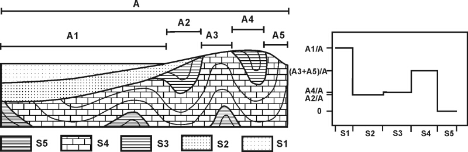
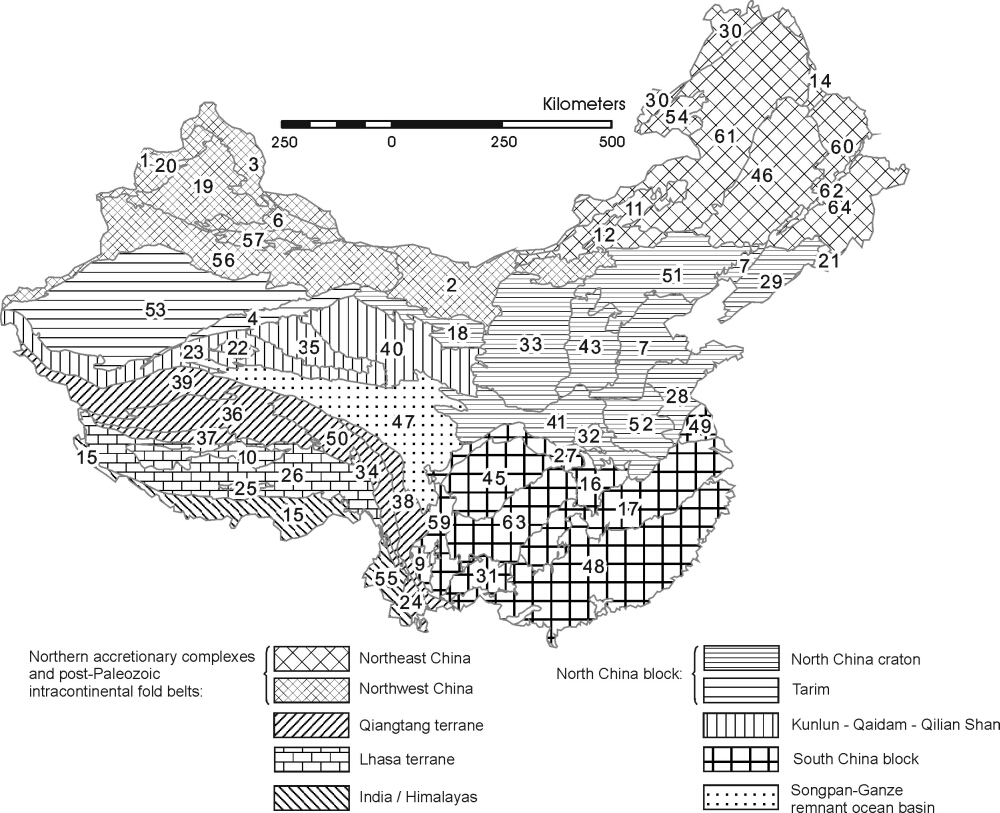
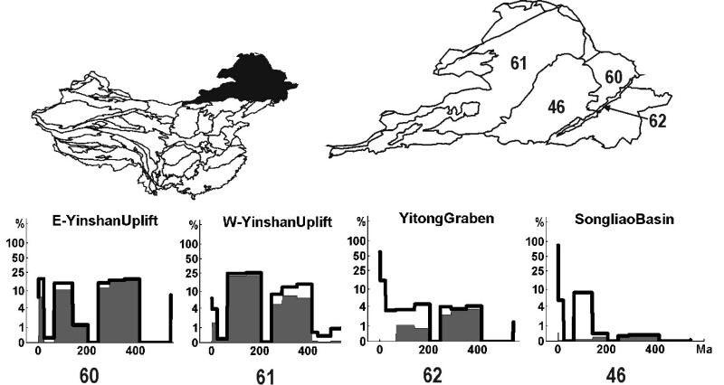
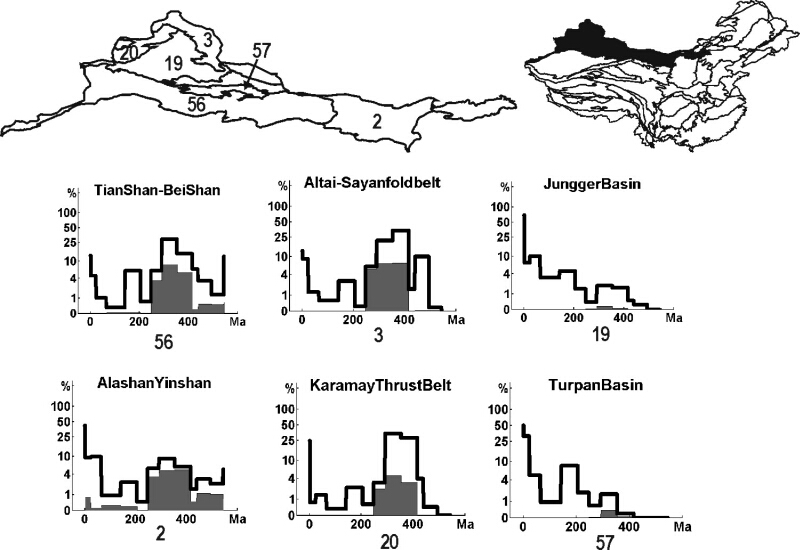
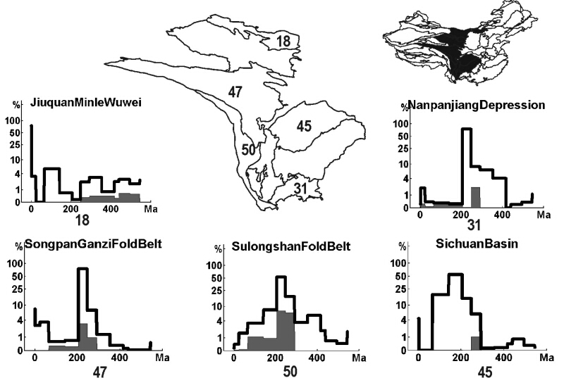
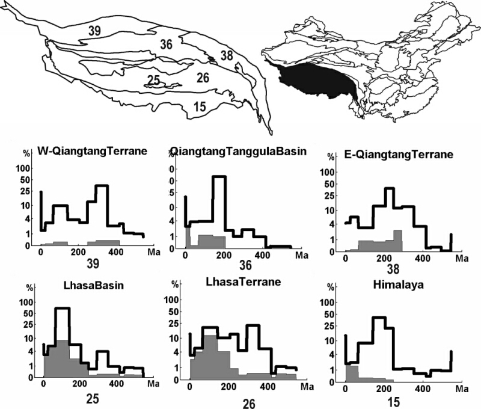

A second look at the geologic map of China:
|
|
| (1) |
The use of equation 1 is illustrated by Fig.3. We will use it for calculating the ”Sloss map” of China, which is shown
in Fig. 2.

For the western United States, a GIS version of the geologic map (at a scale of 1:2,500,000) is available,
in a similar format as the geologic map of China (King and Beikman, 1974). A ”Sloss curve” was
calculated for a rectangular area, located between 39oN/100oW and 49oN/114oW and compared to the
curves that were based on isopach maps for the same area (Sloss, 1976). Thus, the validity of the
above proposed method could be tested. The results of this exercise are shown on Fig.4. For reasons
that are discussed further below, the fit is not perfect. Still, most depositional peaks are located at
the same times. Taking into account these remarks, the ”Sloss curves” of Figs. 2 and 4 represents
an important simplification and abstraction of the geologic map. We will use them to compare the
different tectonic zones of China, and reconstruct their history. Such analysis is reliable because all ”Sloss
curves” on Fig.2 are based on the same geologic map, using the same stratigraphic subdivisions. It
would be more dangerous to make inferences based on a single ”Sloss curve”, or use the method to
compare different data sets, which is what was done for the construction of Fig.4. Fig.2 shows some
interesting and tectonically meaningful features that will be interpreted in the discussion section of this
paper.

The most important problem Sloss (1976) pointed out in his method was the incompleteness of the geologic
record: erosional processes progressively remove greater fractions of the rock record with time. Because the analysis
that is presented in this paper is not based on isopach maps, but on the geologic map, these problems are
aggravated and additional problems arise.

Figure 6 shows how the 64 tectonic zones of China can be grouped into a smaller number of tectonic ”regions”. This grouping is in close agreement with the tectonic zonation of Zhang et al (1984) and Yin and Nie (1996). This section will discuss how the ”Sloss Map” can provide a semi-independent confirmation of its validity. On Fig.6, the tectonic affinities are indicated by different hatching patterns. The hatching density further divides the tectonic groups in subgroups that are more convenient to discuss together. It is important to note that some of the tectonic zones were assigned to a tectonic group in a rather arbitrary way. Generally, this is the case for suture zones. For example, the Tian Shan was considered as part of the ”northern tectonic region”. However, we could also have put this range in the Tarim-Qaidam block, because the Tian Shan contains fragments of both tectonic groups. Similarly, the Qinling-Dabie zone was assigned to the North China block, but being the welding zone with the South China block, it could just as well have been made part of the latter. The only ”suture zone” for which an exception was made is the vast Songpan Ganzi fold belt. A special discussion will be dedicated to this zone, and its relationship with the surrounding tectonic blocks (section dealing with Central China).

The Northern tectonic region consists of a number of microcontinents and early Paleozoic island arcs. These were accreted to the southern margin of the Siberia-Kazakhstan plate and to the northern margin of the Tarim-North China block prior to and during the final collision between these two, which occured diachronously from the Carboniferous (west), until the Late Permian (east) (Yin and Nie, 1996). The Northern tectonic region recorded changes in the regional tectonic stress field, induced by distant accretionary events. During the Mesozoic and Cenozoic, Paleozoic fold belts were reactivated several times as complicated systems of intracontinental mountain ranges and sedimentary basins. Although its tectonic zones have a similar (Paleozoic) tectonic history, the Northern tectonic region is so large, that we will continue our discussion by further dividing it into an eastern and a western part.
Northeast China is part of the Mongolian accretionary fold belt, which is a collage of Ordovician to Early Permian island arcs, blueschist-bearing assemblages, Paleozoic ophiolites, and possible microcontinental blocks (Davis et al., 2001). These tectonic settings stand out in the ”Sloss curves” of Fig. 7 by the great relative importance of magmatic lithologies, which are shaded gray. During the Late Permian and Early Triassic, the Mongolian arc terrane was finally welded together with the North China craton along the Suolon suture (Yin and Nie, 1996; Davis et al., 2001). On the ”Sloss map”, this event is represented by a subsequent absence of deposits during the Triassic, which is probably due to the compression and mountain building that followed collision. During the Late Triassic, the controversial Mongolo-Okhotsk ocean opened to the north of the Mongolian arc terrane. This ocean started subducting both to the north and to the south, causing a continued importance of magmatic rocks in the ”Sloss curves” (figure 7) (Yin and Nie, 1996). During the Jurassic and the Cretaceous, the Suolon suture was reactivated as the Yanshan fold and thrust belt, on the northern margin of the North China block (Davis et al, 1998, 2001). This will be discussed in more detail later. Important to note here is that one of the hypotheses for the driving force behind this reactivation is the Cretaceous closure of the Mongolo-Okhotsk ocean (Zonenshain, 1990; Yin and Nie, 1996; Davis et al., 1998, 2001).

Alternatively, also the collisions that occured on the southern margin of the Asian continent (notably the Cretaceous accretion of the Lhasa block), could have been responsible for the Yanshan compression (Graham et al, 2001). Curiously, this compression was also associated with basin-forming extension in the Mongolian arc terranes (Davis et al, 2001; Graham et al, 2001). Examples of such basins are the Hailar basin and the Songliao basin, which may have been caused by Pacific back-arc extension, or by gravitational collapse of the Late Paleozoic orogen (Graham et al, 2001). This apparent paradox can be reconciled by partitioning of the Gobi extensional province from the contractional Yinshan-Yanshan orogenic belt by escape-tectonic strike-slip faults, such as the East Mongolian Zuunbayan fault, which would be associated with the coeval collisions on the southern Asian and Mongolo-Okhotsk margins (Graham et al., 2001). During the Paleogene, all the ”Sloss curves” of Northeast China show a dip, which could be a distant result of the India-Eurasia collision, or alternatively, be caused by changes in the Pacific plate subduction regime. The only ”Sloss curve” in Northeast China that does show Paleogene sedimentation of any significance is the Yitong graben, which suggests that this feature is at least that old (Tian and Du, 1987).
The pre-Devonian history of Northwest China is poorly understood. Several microcontinents and island arcs were drifting around on the subducting Turkestan ocean that separated the Tarim-North China block from Siberia-Kazakhstan (Heubeck, 2001). Between the Early and the Middle Devonian, southerly sourced clastic sediments were deposited along the passive continental margin of North Tarim (Yin and Nie, 1996). These rocks presently make up the southern Tian Shan; thus the latter does not really belong to the ”Northern tectonic region”. During the Carboniferous, two more components of the Tian Shan were welded to the Tarim block: (1) the central Tian Shan block, a microcontinent with Precambrian basement; and then (2) the northern Tian Shan and Junggar blocks, a post-Devonian arc terrane (Zhou et al., 2001). The collision of the Junggar arcs and the Devonian Altai arcs with the Tarim - North China block in the Carboniferous - Early Permian marked the beginning of the diachronous closing of the Turkestan ocean, which eventually led to the formation in the northeast of the Permo-Triassic fold belt. After its formation in the Carboniferous, the Tian Shan, in a very similar way to the Yinshan-Yanshan, would be reactivated during the Late Mesozoic and the Late Cenozoic, as a result of collisional events that occured far to the south of the range (Dumitru et al, 2001). Examples of such events are the Jurassic Qiangtang-Tarim collision and the Cretaceous Qiangtang-Lhasa collision. Furthermore, the Cenozoic Himalaya orogeny has caused stresses that are transferred deep into the Asian continent. They have made the modern Tian Shan the most spectacular of all intracontinental mountain belts, with elevations of up to 7,400m, at more than 1,000km from the suture zone (Molnar and Tapponnier, 1975).

The ”Sloss curves” of different portions of Northwest China (Fig.8) share numerous characteristics with each other, indicating a common tectonic history since the Carboniferous. The Late Paleozoic is characterized by voluminous magmatic lithologies, which represents the subduction dominated setting of many of the terranes of this area. From the Permian onward, magmatism ceased, in marked contrast with the tectonic zones of northeastern China. Indeed, in the northeast the existence of the Mongolo-Okhotsk ocean, and the proximity to the subducting Pacific Ocean, continued to generate magmas throughout the Mesozoic and Cenozoic, which was not the case for northwest China. Another characteristic of most zones of the ”Sloss map” of Northwest China is a pronounced dip during the Triassic, which was probably caused by mountain building that followed closure of the Turkestan ocean, with the addition of the compressional stresses caused by the southerly Qiangtang-Tarim collision. The Jurassic shows up as a peak in most ”Sloss curves”. This could represent post-orogenic subsidence (”collapse”). The Cretaceous is a dip again, corresponding to Late Mesozoic reactivation of the Tian Shan that is detected by a cluster of Cretaceous apatite fission track ages (Bullen et al., 2001; Dumitru et al, 2001). Finally, the Cenozoic ”Sloss curve” shows an increase. This is caused by a strong ”blanketing effect”, and reflects the formation of large foreland basins (e.g, Junggar, Turpan) between the different mountain ranges (e.g., Tian Shan, Bogda Shan). The structural and stratigraphic relief between these coexisting tectonic elements can attain several thousand meters over distances of just a few tens of kilometers.
The Tarim block and the North China craton are often postulated to have behaved as a single tectonic block
since at least the early Paleozoic (e.g. Zhang et al., 1984; Yin and Nie, 1996). Others have suggested that they were
separate blocks until the Permo-Triassic closure of the Turkestan ocean (Zhou and Graham, 1996a; Yang et al.,
1997). That the Tarim block and the North China craton are only connected by a very narrow strip. This ”problem”
is solved by restoring ~ 400km of Cenozoic sinistral displacement along a controversial Altyn Tagh-Alxa-East
Mongolia fault (Yue and Liou, 1999; Yue et al., 2001). In this section, we will discuss the North China
craton sensu stricto, which is the eastern part of the North China-Tarim block. The North China
craton is bordered to the north by the Permo-Triassic Suolon suture, which was reactivated during the
Jurassic as the Yanshan intracontinental fold belt (Davis et al., 1998, 2001). To the southwest, the North
China craton is sutured against the Qaidam block along the Qilian Shan; the suture marks a collisional
event of Devonian age. Due east of the Qilian Shan is the Qinling-Dabie Shan, which represents the
Permo-Triassic collision of the North China block with the South China block (Yin and Nie, 1996; Zhou
and Graham, 1996b). To the southeast, the North China block is offset by the sinistral Tan Lu fault
system.
Although named a ”craton” (it has Archean basement), the North China tectonic group underwent substantial internal deformation over the course of its Phanerozoic history. The ”Sloss curves” of the North China craton do not tell a simple story. Important information has been obscured by the ”blanketing effect”. This is especially the case for the Cenozoic Bohai rift basin. During the Late Triassic, this zone roughly corresponded to the ”Huabei plateau”, which was the result of continuing convergence after the collision of South China with North China (Yin and Nie, 1996). Sediments derived from this topographic high were deposited in the neighboring Shanxi and Ordos basins, where they are responsible for a Triassic peak in the ”Sloss curves”. This is a feature that will be seen more often in the ”Sloss map” of central China (discussed below; Fig.9).
The South China block is a relatively stable craton (also called the ”Yangtze craton”) that has a relatively insensitive ”Sloss curve”. In the Jiangsu- and South China fold belts, all stratigraphic ages are represented approximately to an equal degree, with a small preference to the Quaternary due to the ”blanketing effect”. The ”Sloss curves” of the western part of the South China tectonic group show a distinct peak in the Triassic. This marks the collision of the South China block with the North China block, as will be discussed below.
As was previously discussed, disagreement exists as to whether or not the Tarim block and the North China
craton were separate tectonic entities before the Permian. A similar controversy exists about the Qaidam block.
Some have suggested that it was part of the Tarim before being cut off and displaced by the Altyn Tagh fault (Zhou
and Graham 1996a; some extent also Yin and Nie, 1996), whereas others think that the two to represent separate
tectonic blocks (e.g. Zhang et al., 1984). The discovery of a Middle Paleozoic suture zone in the Altyn Tagh favors
the latter point of view (Sobel and Arnaud, 1999). After the Qaidam and Tarim blocks were welded together, an
extensive, continuous, late Paleozoic - early Mesozoic Kunlun magmatic arc developed along their southern
margin. This arc died during the Triassic collision of the Tarim-Qaidam block with the Qiangtang
block.
The closure of the ocean basin that existed between the Tarim-Qaidam block and the Qiangtang block, is marked by the abrupt ending of the (gray-shaded) magmatic area under the ”Sloss curve” of the Kunlun tectonic zone. The same is true for the Altun Shan, where magmatism ended with the closure of the ocean that existed between Tarim and Qaidam. Due to the ”blanketing effect”, little can be said about the ”Sloss curves” of the Qaidam and Tarim basins themselves. In this case, it would be particularly valuable to have access to isopach maps such as the ones Sloss (1976) used.
The most representative tectonic element for this region is the Songpan-Ganzi fold belt. This tectonic zone is characterized by a striking depositional peak in the Triassic (Fig.9). This peak can be recognized slightly less spectacularly in the zones immediately to the south of Songpan-Ganzi (e.g., the Sichuan Basin, Sulong Shan). Sloss (1963, 1976) was not the first person to recognize that the Triassic was a lull in continental sedimentation. It followed immediately after the last (Variscan) stages of the assemblage of the Pangea supercontinent, and is characterized by very low global sea level (Vail and Mitchum, 1977). Hence, the abundance of Triassic deposits in the tectonic zones of Central China must indicate an important tectonic event. This event is the diachronous suturing of the North and South China blocks (Zhou and Graham, 1996b). North of Songpan-Ganzi (e.g., Altun Shan), the Triassic shows up as a low point in the ”Sloss curve”. This could either be the result of the worldwide sea level drop described above or alternatively, be caused by the same events that caused the Triassic peak in and south of Songpan-Ganzi. Indeed, if the Triassic orogeny was the result of northward underthrusting of the South China block under the North China block, it seems likely that the zones north of the suture zone would be uplifted, whereas the southern zones would flexurally subside. A modern day analogue to this would be the association on either side of the Indus-Tsangpo suture zone of the North Indian Ganges foreland basin, and the Tibet-Qinghai Plateau.

The Qiangtang block drifted off from Gondwana some time during the Paleozoic (Yin and Harrison, 2000). During the Triassic, the ocean that separated the Qiangtang terrane from the Asian continent started subducting beneath it. The northern margin of the Qiangtang terrane became an active one, which is reflected in an increase of the magmatic area under its ”Sloss curves” (Fig. 10). Almost immediately following the Permo-Triassic collision of South China with North China, the Qiangtang-Indochina block was underthrusted by the amalgamated South China and Qaidam-Tarim blocks along the Jinsha suture (Chang et al, 1986; Yin and Nie, 1996; Yin and Harrison, 2000). The Songpan-Ganzi remnant ocean basin was trapped in the triangular space between the three aforementioned blocks. The Triassic peak in the ”Sloss curves” of the Qiangtang block testify of this event (Figs.9 and 10). Although subduction-related magmatism stopped in the Kunlun, it continued in the Qiangtang block, along with the approach from the south of the Gondwana-derived Lhasa block. The Lhasa block collided with the Qiangtang block along the Banggong-Nujiang suture during the Cretaceous (Allègre et al., 1984; Dewey et al., 1988; Yin and Nie, 1996; Yin and Harrisson, 2000). Whereas the underthrusted Qiangtang block was deformed and uplifted (marked by a relative low in its ”Sloss curves”), the underthrusting Lhasa block underwent flexural subsidence and is generally characterized by a ”Sloss peak”. After the collision of the Lhasa block with the Qiangtang block, the oceanic crust that separated the Lhasa block from the Indian subcontinent subducted beneath the Lhasa block, which resulted in extensive magmatic activity and the development of the Gangdese batholith (Allègre et al., 1984; Yin and Harrison, 2000). At approximately 45Ma, India finally collided with Asia along the Indus-Tsangpo suture (Le Pichon et al., 1992). This led to the intensely studied, but poorly understood Himalaya-Tibet orogeny. The Tibet-Qinghai Plateau is believed to have resulted mainly from this final collision, although it has been suggested that a pre-existing plateau formed after the Kunlun-Qiangtang collision (Murphy et al, 1997). The present day Tibet-Qinghai Plateau comprises the Lhasa terrane, the Qiangtang terrane, and to some extent the Kunlun-Qaidam-Qilian Shan tectonic group. At the same time, the Himalaya-Tibet orogeny reactivated many of the tectonic zones and groups that have been discussed in previous paragraphs. This is the case for the Tian Shan and the Altai, but also for the Altun Shan, which appear to have acted as a zone of weakness that became the preferred locus for the continental-scale Altyn Tagh sinistral strike-slip fault. The Kunlun, Xianshui-He, and Red River faults roughly follow the Kunlun-Anyemaqen, Jinsha, and Banggong-Nujiang sutures, respectively (Tapponnier et al., 2001). Thus, fault reactivation seems to be a major factor in the deformation of the Chinese tectonic ”jigsaw puzzle”. The translation of this in terms of ”Sloss curves” is a trivial one: topographic depressions cause Cenozoic peaks, whereas areas of high relief show a dip in the Cenozoic ”Sloss curve”. These signatures can be seen all over China, and perhaps even affect the Pacific margin (e.g. Jolivet et al, 1990).

I have developed a method for representing a two-dimensional geologic map by a one-dimensional depositional
time series, similar to the way L.L.Sloss represented the geologic maps of North America and eastern Europe
(Sloss, 1976). Going one step further, the geologic map and the tectonic map of China were united
into one ”Sloss map”. Despite limitations and assumptions of the method, the ”Sloss map” proves
useful for recognizing the most important tectonic events of Phanerozoic China, and for delimiting
tectonic regions, which can comprise multiple tectonic zones. The Permian-Triassic North China - South
China collision and the Cenozoic India - Eurasia collision stand out especially clearly. Also, difference
between stable cratons and tectonically more sensitive accretionary fold belts can easily be recognized.
Major improvements could be made with the incorporation of isopach maps, rather than ordinary geologic maps.
Other welcome changes would be increased time resolution, and the addition of more lithological parameters to the
geologic map. If all these conditions were fulfilled, it might be possible to fully automate the interpretation of the
”Sloss map” by means of a statistical correlation analysis. If extended to other continents, the ”Sloss analysis” could
prove to be as useful in tracing and describing the breakup of continents, as it is with continental accretion, which I
have demonstrated in this paper with China’s history of amalgamation. The first places to examine in the case of
China would be Gondwana, and the southern margin of the Tethys. Indeed, most of the tectonic blocks of Fig.2
originally drifted off from continental areas now consituting India and Australia (Şengör and Natal’in, 1996).
The methodology described in this paper might prove to be a good first-order way of detecting such
associations.
Another application of the ”Sloss method” in its present form would be the study of orogenic terranes. If geologic maps exist in a GIS form, the ”Sloss curve” derived from the geologic map could be used as a proxy for the isopach map, as was suggested in Fig.4. Doing this may yield insight in the evolution of rates of deposition until the time of collision, which is important for understanding the mechanisms of mountain building.
Many thanks to Steve Graham for useful suggestions and encouragement, and to Stanford University for financial support.